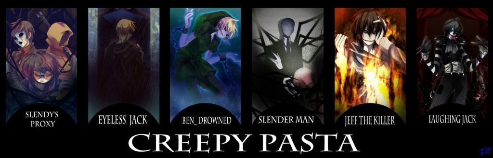

Creepypastas
O que são Creepypastas?
Creepypastas é um termo usado para definir histórias de terror e lendas urbanas divulgadas na internet, em fóruns e redes sociais que se espalham de forma rápida, ganhando muito reconhecimento.
As Creepypastas são narrações escritas de forma cativante, normalmente relacionadas com cultura pop, como: músicas, filmes, jogos, brinquedos, personagens e etc.
Diferente das lendas urbanas, as Creepypastas geralmente acompanham fotos, vídeos ou aúdios como complemento para aprofundar a história e causar mais impacto e interesse no leitor.
Dentre as histórias, existem diferentes gêneros nas quais se encaixam, são eles:
-- Narrativas: O narrador conta lendas, histórias ou acontecimentos bizarros que são muitas vezes no passado. A história pode ser narrada tanto em primeira quanto em terceira pessoa.
-- Diário: A história é contada no formato de um diário, como se fosse o diário do autor.
-- Rituais: Uma lista com instruções para o leitor como: ir em certo lugar, em tal horário e basicamente coisas para a invocação. Depois siga o passo a passo corretamente.
-- Episódios perdidos: O narrador conta histórias de episódios perdidos, que foram transmitidos em cinema ou TV, mas que foram retirados do ar por serem perturbadores, conturbados ou bizarros que nunca foram mostrados ao público novamente. O narrador pode ser tanto em primeira pessoa quanto em terceira pessoa.
-- Jogos alternativos: Histórias baseadas em jogos reais, onde o jogo foi modificado ou foi comprado em uma loja alternativa, como vendas de garagem ou baixados em sites estranhos, contendo elementos que não deveriam ser mostrados no jogo e ao público, como: violência, palavras de baixo calão e expressões bizarras.
Jeff the killer
"Jeff the Killer" é uma lenda urbana e personagem fictício que se tornou popular na internet, conhecido por sua história aterrorizante e imagem perturbadora. A narrativa surgiu pela primeira vez como uma creepypasta, que são histórias de terror compartilhadas online para assustar e entreter os leitores.
A história de Jeff the Killer começa com um adolescente chamado Jeff, que supostamente era um rapaz normal até que sua vida foi dramaticamente alterada. Jeff mudou-se com sua família para um novo bairro e, infelizmente, tornou-se alvo de bullying por parte de alguns valentões locais. Uma noite, durante uma festa de aniversário, Jeff foi atacado brutalmente por um grupo de agressores.
Após o ataque, Jeff foi levado para casa gravemente ferido, mas algo dentro dele mudou irreversivelmente. Ele começou a experimentar intensos surtos de raiva e insanidade. Essa transformação culminou em uma noite fatídica em que Jeff, completamente fora de controle, mutilou seu próprio rosto com uma lâmina, esculpindo um sorriso sinistro em seus lábios e cortando suas pálpebras, dando-lhe uma aparência assustadora.
A história continua com Jeff perseguindo e aterrorizando suas vítimas, muitas vezes aparecendo inesperadamente nos momentos mais sombrios. Sua imagem, caracterizada por cabelos pretos desgrenhados, olhos sem pálpebras e um sorriso macabro, tornou-se icônica na cultura da internet.
Embora Jeff the Killer seja uma criação de ficção, sua popularidade cresceu rapidamente através de fóruns online, vídeos no YouTube e outros meios de compartilhamento de histórias assustadoras. O personagem tornou-se uma lenda moderna do horror na internet, inspirando fanfics, jogos e até mesmo algumas adaptações para o cinema independente.
É importante destacar que Jeff the Killer não tem uma origem oficial e varia em detalhes dependendo da versão da história. No entanto, sua presença na cultura online continua a assombrar os cantos mais escuros da internet, proporcionando arrepios aos amantes do gênero de terror.
Curiosidades
Aqui irei falar algumas curiosidades e coisas importantes sobre as Creepypastas, além de ensinar a invocação.
Relatos
Aqui irei falar sobre casos e relatos envolvendo as Creepypastas.